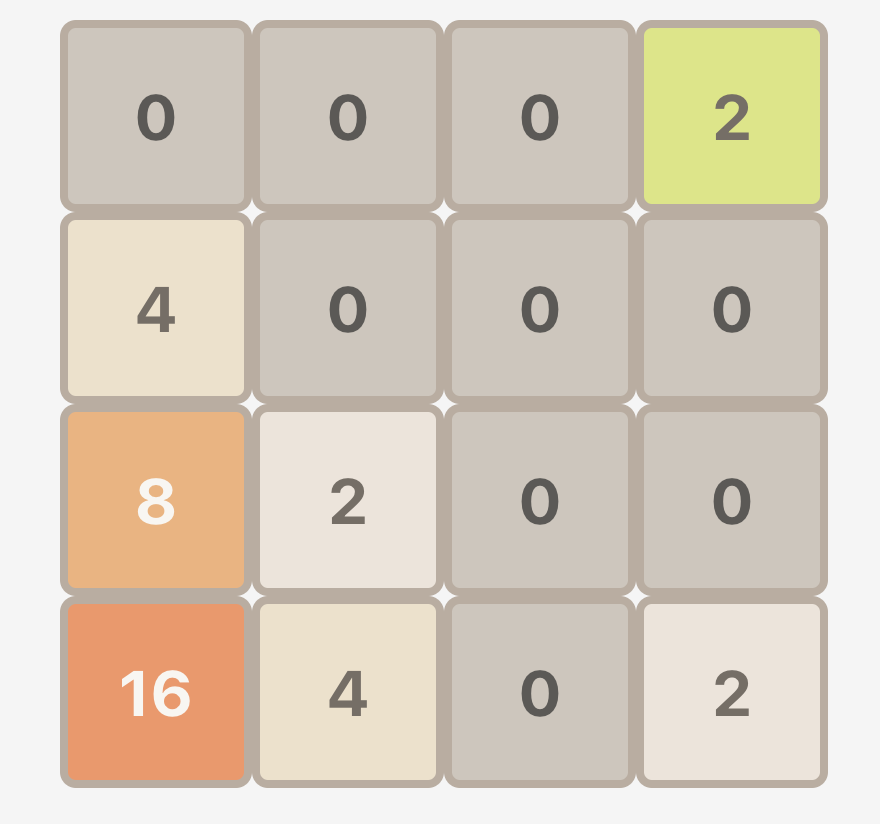
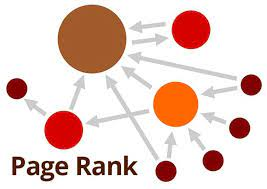

Brand Concierge (BCOS) — Enterprise Multi-Tenant LLM Agent Orchestrator, Grounded Neural Retrieval & Automated Program Optimization at Adobe
- Agent Orchestration Engine (BCOS): Architected the unified PydanticAI agent runtime with declarative manifest compilation, replacing multi-hop legacy services with a single high-performance agent runtime supporting Agent-to-Agent (A2A) JSON-RPC protocols.
- Declarative Tool Framework: Designed extensible Pydantic tool schemas with declarative pre/post execution hooks, state capture primitives, and configurable
ToolErrorPolicyfor deterministic runtime recovery. - Neural Source Attribution: Engineered a factory-based source attribution engine with remote cross-encoder rerankers (BGE-M3, E5-curriculum), client-side normalization, and token safeguards (<512 tokens), delivering grounded citation without hallucinations.
- High-Performance Inference (Lucid Lens): Developed CPU-only Text Embeddings Inference (TEI) microservices on ONNX Runtime (ORT) with dynamic axes, eliminating Candle batching limits to rerank 30+ candidate passages in a single batch with sub-second p50 latency (588ms–796ms).
- Automated Agent Optimization (Eval Studio): Integrated Genetic-Pareto Prompt Optimization (GEPA) and DSPy into Eval Studio, achieving Pareto-optimal prompt mutations with 35x fewer rollouts than RL baselines.
- Streaming Serving & Traffic Isolation: Hardened core FastAPI/MongoDB conversation engine with Server-Sent Events (SSE) token streaming, artifact state replacement (
StreamEventProcessor), and sandbox isolation (TrafficControlEnforcer).
- Evaluated across four causal language model families on numerical reasoning (GSM8K, SVAMP), reading comprehension (DROP), and logical reasoning tasks.
- Improves Zero-Shot-CoT accuracy on
code-davinci-002by 5% on numerical reasoning and 13% on reading comprehension. - Demonstrates that both the original query and the model-generated rephrased version provide complementary semantic signals that stabilize in-context learning.

Online visual interface for exploring the effect of pretraining term frequencies (The Pile) on few-shot language model performance across GPT-Neo, GPT-J, OPT, and BLOOM.
Investigating activation properties and feature representations of deep neural networks during Kharagpur Winter of Code (KWoC).

Interactive implementation of the 2048 sliding tile puzzle game in React with keyboard controls and animations.

Updating PageRank scores incrementally for web pages in large, dynamically evolving web graphs without full power-iteration recomputation.
Daily curated AI, systems, and market intelligence issues in the Techmeme edition layout.
Stan Weinstein Stage 2 momentum scanner, market intelligence reports, and deep business monographs.
Structured destination guides, itineraries, and field research.